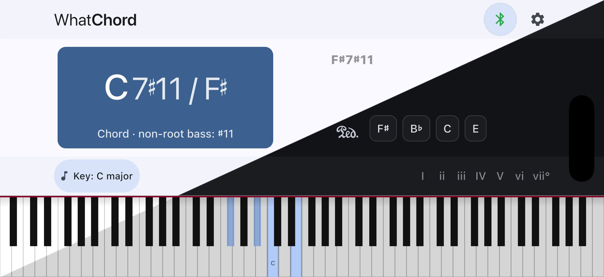
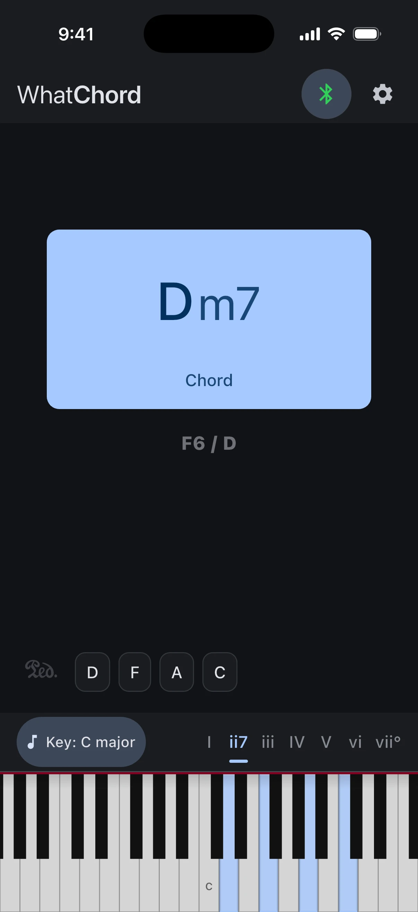
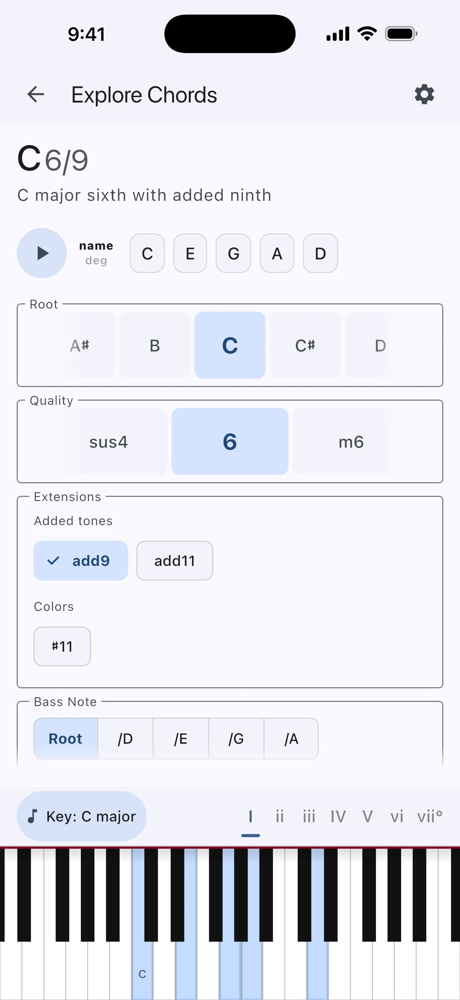
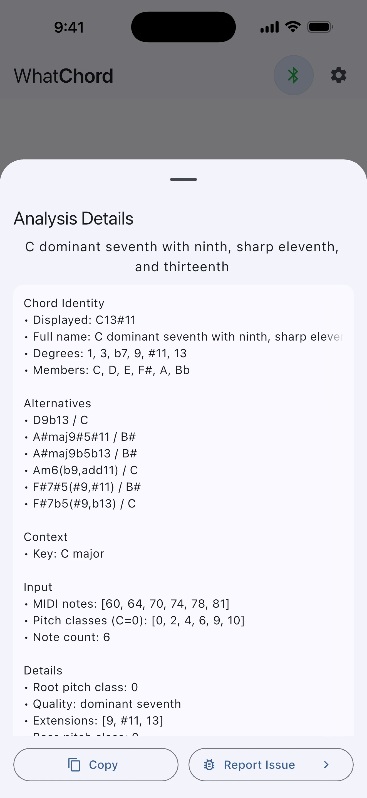

Stop guessing what chord you're playing.
Connect any Bluetooth or USB MIDI keyboard and WhatChord identifies chords instantly, with names that match what musicians actually use. No internet required. Available on iOS and Android.

See the chord name as you play it.
WhatChord responds as notes arrive. No extra setup, no chord book required. It handles everything from simple beginner triads to complex jazz voicings with the same quick feedback.

Learn chords even without a keyboard.
Not near your instrument? Explore mode lets you build a wide range of chords by choosing the root, quality, extensions, and bass note. Each selection shows a clear example on the piano keyboard and plays it back in the app. No MIDI device needed.

Chord names the way musicians write them.
A basic note-matching approach can identify simple triads, but real voicings often need more context. WhatChord scores and ranks multiple plausible interpretations using musical heuristics: inversions, extensions, upper structures, altered dominants, and key signature. It picks the name a musician would expect. When a voicing is genuinely ambiguous, the app shows the alternatives rather than hiding them.

Musically informed, not just note-matched.
The same four notes can point to more than one chord name. Context is what makes the useful answer possible.
These are just four pitch classes. A basic note matcher does not know which note should be treated as the root, whether the bass is structural or colorful, or why B♭ matters in a dominant 7th chord.
Recognizes the notes as a C7 chord with a raised 11th and F♯ in the bass. It writes the seventh as B♭, not A♯, because that is how a C7 chord is spelled.
For players at every level.
Pianists & keyboardists
Get immediate confirmation on what your hands are doing. Especially useful when you hear something interesting and need to name it fast.
Music students
Learn chord construction by exploring voicings interactively, or verify that what you're playing matches what your theory textbook describes.
Educators
Demonstrate inversions, extensions, and altered chords in real time. Show students a live analysis of the exact notes being played in class or at rehearsal.
Composers & improvisers
Check complex extended voicings quickly without breaking flow. Identify that mysterious cluster you stumbled upon mid-session and want to remember.
On-device. Open source. No strings.
WhatChord does not collect your data, connect to the internet during use, or show advertisements. All chord analysis runs entirely on your device. Your playing stays yours.
Open source · Zero Clause BSD License →How it works.
Two in-depth pieces: one for musicians curious about why chord naming is genuinely hard, and one for engineers who want to see the algorithm.
Why Chord Naming Is Harder Than It Looks
The inversions, extensions, altered tones, and enharmonic ambiguities that make real chord recognition a genuine musical challenge, and how WhatChord handles them.
Read the article →Under the Hood: Building a Real-Time Chord Recognizer
A detailed look at the bitmasks, chord-quality templates, scoring and ranking heuristics, and LRU cache that power real-time chord identification in a Flutter app.
Read the article →